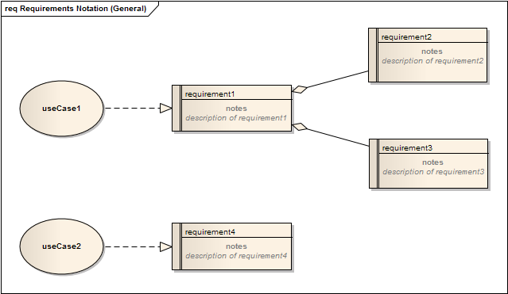

example requirements diagram
A typical example of a Requirements Diagram Artefact (Use Cases shown are ‘realised’ by a Requirement)
Requirements artefacts are key to:
|
• |
Defining the scope for a project and/or product. |
|
• |
Supporting the development of other content in the analysis model. |
Key stakeholders should be fully involved throughout the lifecycle of a project in the development and validation of requirements.
In addition, a number of activities and considerations also support the creation and development of requirements and the elements
that elaborate them (for further details see the section:
Developing Requirements), including:
|
• |
Eliciting requirements, |
|
• |
Requirements characteristics, |
|
• |
Classifying and organising requirements. |
A project following the Rapid Methodology should strive to keep the requirements ‘high level’. This should ensure that the
project is focussed and can embrace changes through the use of detailed type requirements such as user stories etc.,.
The modelling approach for Requirements outlined in this section is based heavily on the functionality of the Enterprise Architect
CASE Toolset; however it can also be applied to any toolset / documentation approach.